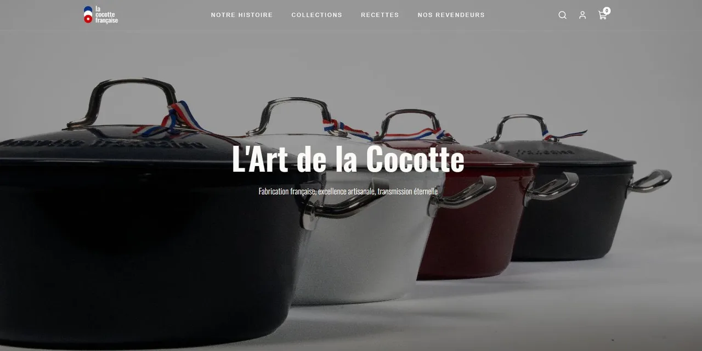
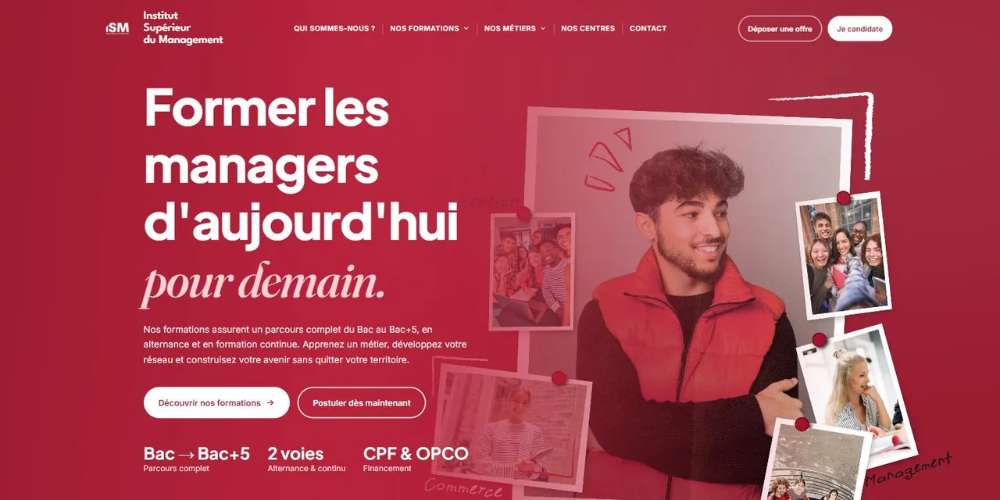
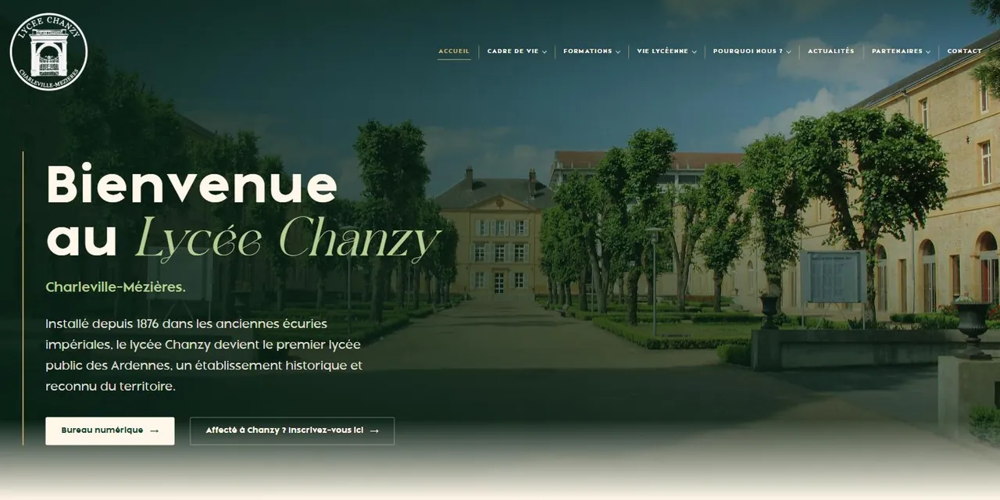
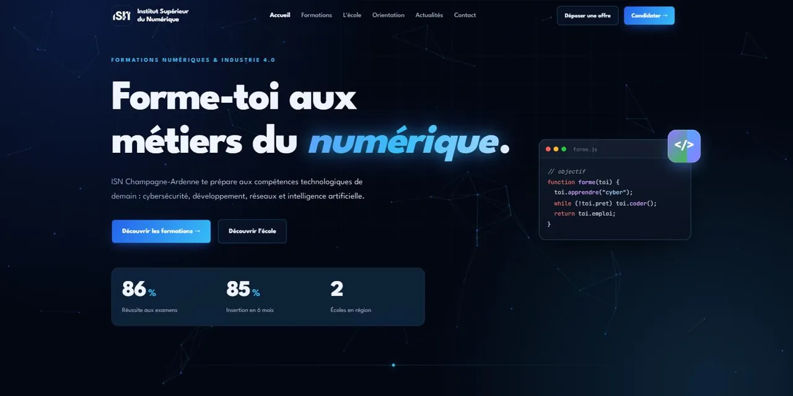
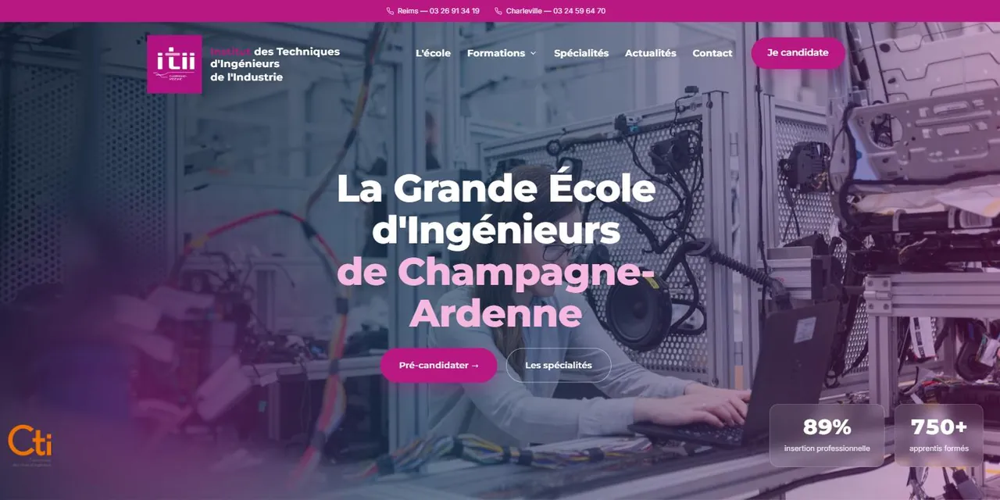

La Cocotte Française
Vitrine haut de gamme pour une manufacture de cocottes en fonte : mise en scène des collections, univers de marque et fiches produits soignées.
HTML · CSS · JavaScript
Voir le projetJe crée des sites web qui donnent une vraie présence en ligne à votre entreprise.
01 — Réalisations

Vitrine haut de gamme pour une manufacture de cocottes en fonte : mise en scène des collections, univers de marque et fiches produits soignées.
HTML · CSS · JavaScript
Voir le projet
Catalogue de formations en management du Bac+2 au Bac+5, avec moteur de recherche et parcours en alternance.
HTML · CSS · JavaScript
Voir le projet
Formations, cadre de vie et vie lycéenne du premier lycée d'État des Ardennes, présentés de façon claire et institutionnelle. Projet en cours de conception.
HTML · CSS · JavaScript
Voir la maquette
Six filières aux métiers du numérique en alternance : cybersécurité, développement web, IA, cloud, réseaux et IoT.
HTML · CSS · JavaScript
Voir le projet
Formations d'ingénieurs par alternance, avec recherche de formations et candidature en ligne, sur deux campus.
HTML · CSS · JavaScript
Voir le projet02 — Parcours
Développeur passionné, je construis mon activité en indépendant autour d'une idée simple : livrer des sites soignés, utiles et faits pour durer.
Autoformation et pratique continue autour de HTML, CSS et JavaScript, et des fondamentaux de l'intégration web.
Structure sémantique, responsive, accessibilité et performance — les bases d'un site qui inspire confiance.
Un goût marqué pour les interfaces épurées, la typographie et les choix qui rendent un site clair et crédible.
J'accompagne entreprises et indépendants sur l'ensemble du projet, avec un échange direct à chaque étape.
Technologies HTML · CSS · JavaScript · Git · Figma · Performance · SEO · Accessibilité
Une méthode simple, un seul interlocuteur.
On cadre ensemble votre activité, vos objectifs et le contenu du site.
Je conçois et développe le site étape par étape, avec des points réguliers.
Mise en production, prise en main et suivi une fois le site publié.
03 — Contact
Parlons-en et voyons ensemble comment créer un site qui correspond à votre activité.
contact@maeldubal.fr